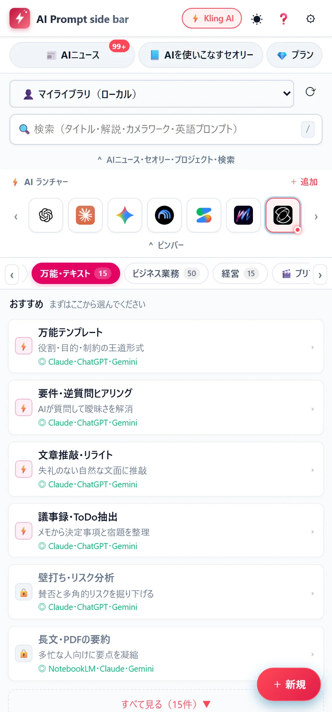
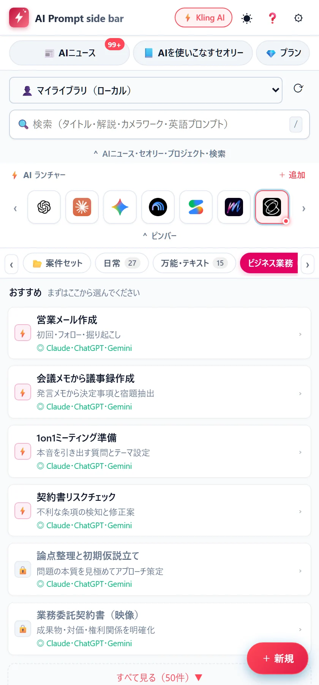

メモ帳から、コピペ。
メモ帳やNotionを開いて、探して、貼って、書き換える。使うたびに、同じ手間。
いつものAIで、そのまま使えます
対応：ChatGPT、Claude、Gemini、NotebookLM、AI Studio、Perplexity、Kling、Runway、Luma、Hailuo、Pika、PixVerse、Sora、Higgsfield、Midjourney、Leonardo、Ideogram、Recraft、Tripo、v0、Bolt、Lovable
こんな毎日に
メモ帳やNotionを開いて、探して、貼って、書き換える。使うたびに、同じ手間。
動画AI・画像AIへの指示は、カメラワーク、ライティング、レンズ…と、決めることが多い。
よく使うものほど、いざという時に見つからない。探している間に、やる気が冷める。
ぜんぶ、サイドパネルの中で。
使い方
やることは、3つだけ。コマンドを選ぶ感覚で、プロンプトが仕上がります。
使い方を、動画で。1分50秒・音声と字幕つき（YouTube）
目的別の一覧から、プロンプトを選ぶ。
日常・文章・ビジネス・映像・開発・画像・動画まで、タブで見つかります。まずは「おすすめ」から。何を使えばいいか迷わない。

選択肢を選んで、空欄を埋めて、仕上げる。
役割・目的・背景などを、選ぶか書くだけ。仕上がりはプレビューで確かめられて、そのまま直すこともできます。日本語でも英語でも。
ワンクリックで、AIの入力欄へ。
を押すと、開いているAIの入力欄に、そのまま入ります。コピーもできるので、ほかの場所にも使えます。
ほかの方法と比べる
メモ帳に集めても、AIごとの保存機能に入れても、使うたびの手間は残ります。違いは、AIに入れるまでの速さと、どのAIでも同じに使えることです。
| 比べる点 | メモ帳から 切り貼り |
AIごとの 保存機能GPTs・Gem など |
LB AI Prompt side bar |
|---|---|---|---|
| AIに入れるまで | 開く・探す・コピー・貼る | そのAIを開いて、選ぶ | 選んで、ワンクリック |
| 使えるAI | どこでも（毎回、貼る） | そのAIの中だけ | 22のAIで、同じ操作 |
| 画像・動画AI | 貼るだけ | なし | Kling・Runway などに直接 |
| 中身の書き換え | 毎回、手で直す | 会話で直す | 選択肢と空欄で整える |
| すぐ使えるプロンプト | 自分で集める | 公開されたものを探す | 目的別に200件以上 |
| 書いた内容 | 手元のメモ | そのAIの会社に保存 | 弊社には見えない |
機能
200件以上
日常／文章／ビジネス／経営／映像のプリプロ／開発・Web・アプリ／素材・デザイン／画像生成／動画生成（画像から・文章から・動画から）／編集 ほか。今後も、増えていきます。

22のAI
ChatGPT・Claude・Gemini・Kling・Runway…。アイコンを押せば、すぐ開く。

ショートカットひとつで、サイドパネルとAIを同時に。
★を1〜5でつけて、よく使う順に並べて、検索でも呼び出せる。使うほど、手になじむ。
日本語・English・繁體中文・한국어・Español・Português・Français。
無料版でも
各タブの「おすすめ」4件ずつ、AIの最新ニュース、「AIを使いこなすセオリー」、挿入・コピー・検索・★評価。ログインなしで使えます。
有料プラン
映像クリエイターへ
カメラワーク、光、レンズ、動きの速さ。動画AIへの指示を、日本語の選択肢から組み立てます。仕上がった英語のプロンプトを、Kling・Runway・Luma・Hailuo・Midjourney の入力欄へそのまま。
コマンドの一覧
タブを押すと、そのタブのコマンドが並びます。「無料版でも」と付いたものは、無料版でずっと使えます。
新機能
v1.0.2 で追加した機能です。Chrome は拡張機能を自動で更新します（お手元に届くまで、数時間かかることがあります）。
レポートの構成づくり、ゼミの発表、自己分析・ES・面接の練習、試験勉強まで。12のコマンド。AIの答えをそのまま提出せず、自分の言葉で書くための使い方が前提です。
相場ニュースの整理、決算の読み解き、上がる場合と下がる場合の両方のシナリオ、資金管理、売買記録の振り返り。12のコマンド。投資助言や売買の推奨ではありません。
「/3行」「/表」「/辛口」など45種。押すだけで、プロンプトに「3行で結論」「表にして」などの条件を足したり、開いているAIに追加の指示を送ったりできます。
開いているページの本文をボタン一つで集めて、AIに「集めた資料だけを根拠に」答えさせたり、NotebookLM にまとめて渡したりできます。集めた内容は、保存も送信もしません。
プライバシー
プロンプトの本文・メモ・入力内容・参照画像・参照ファイルを、弊社は読めません。そういう作りにしています。
ログイン不要。何も送信しません。
記録するのは、メールアドレスと、お支払いの状況だけです。
データはお使いのパソコンで暗号化。鍵は、あなた自身のGoogleドライブにあります。
アクセス解析（利用状況の収集）はありません。
料金
カードの登録は、いりません。そのあとも、無料版はずっと使えます。
$0
ずっと無料
$3.49／月
いつでも解約できる
$30／年
月あたり $2.50。月払いより $11.88 お得
お試し中に申し込むと、
初年度は $15。2年目から $30／年
価格は税別です（日本では、消費税10％が加わります）。月払いは、あとから年払いに切り替えられます。解約しても、お支払い済みの期間の終わりまで使えます。初回のお支払いから14日以内なら、全額を返金します（返金・解約について）。
いいえ。ChatGPT・Claude・Gemini など、他のAIを使いこなすための補助ツールです。プロンプトを選んで、整えて、いつものAIの入力欄に入れるまでを手伝います。
各タブの「おすすめ」4件ずつ、AIニュース、「AIを使いこなすセオリー」、挿入・コピー・検索・★評価が、ずっと無料です。ログインも、いりません。はじめの14日間は、すべての機能を試せます。
いりません。Googleアカウントでログインするだけで、14日間、すべての機能が使えます。
送られません。弊社は、プロンプトの本文・メモ・入力内容・参照画像・参照ファイルを読めません。同期を使う場合も、データはお使いのパソコンで暗号化されます。くわしくは、プライバシーポリシーをご覧ください。
1つのアカウントで、4台までです。使わなくなったパソコンは、画面から外せます。60日使っていないパソコンは、自動で外れます。
いつでも解約できて、お支払い済みの期間の終わりまで使えます。初回のお支払いから14日以内なら、全額を返金します。くわしくは、返金・解約についてをご覧ください。
Google Chrome です。サイドパネルの機能を使うので、パソコン版のChromeでお使いください。